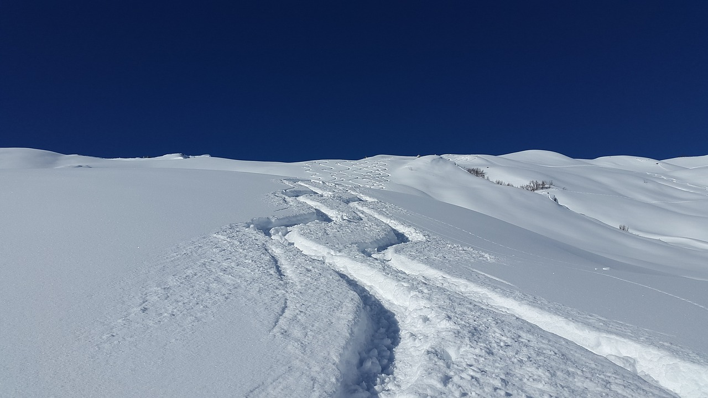

Back Country Skiing
Back country skiing refers to any part of skiing that you do not do on a groomed trail. For me the best part of back country skiing is the ability to just climb any mountian and ski down it, if you are well prepaird. Everytime I go out I always bring a backpack that includes things like a water bottle, food, first aid kit (incase anything happens to me). I also bring thinsg like more layers in case I were to get cold or the tmpture were to drop. I really enjoy Back Country skiing becuase it is very rewarding for example you dont need to pick any trails or moutians to go to you can ski where ever you see fit to. The mountians that you can climb give the best views and although the way up the mountian can be hard at times it makes the way down that much more fun. I also love making new lines as I go down the mountian you can chose any way to go down or up. The skis that I use are a pair of 2016 Blizzard choiche which are nice for riding through powder which is the best kind of skiing. The bindings on the skis make them so much better than any type of downhill skis that I have used. They are called Telemark bindings which means that the back of the bindings are not mounted to the back of the skis, which makes them more like cross Country skis.
